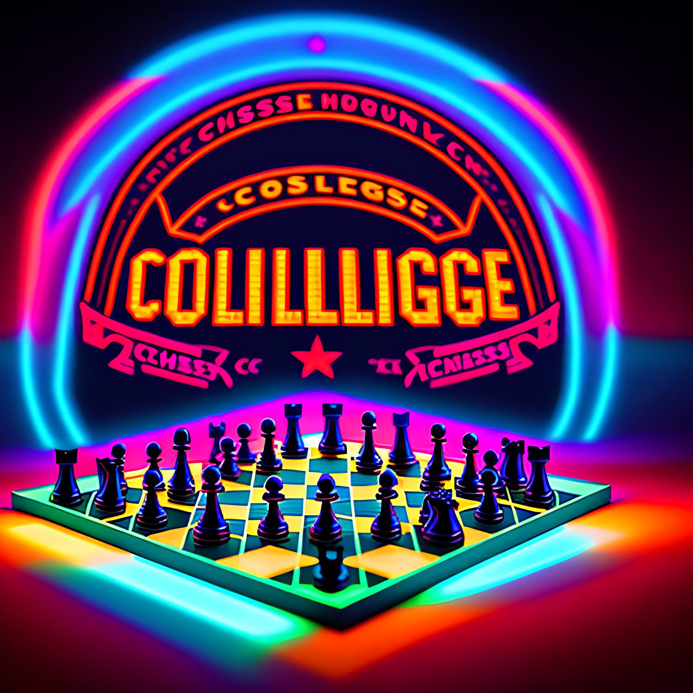

About Us
Welcome to our chess club website! We are dedicated to promoting the game of chess and creating a community of chess players. Whether you are a beginner or a seasoned player, we invite you to join us for friendly games, tournaments, and events. Our club is open to all ages and skill levels, and we believe that everyone can benefit from the intellectual challenge and social interaction that chess provides. Thank you for visiting our website, and we hope to see you at our next meeting!
